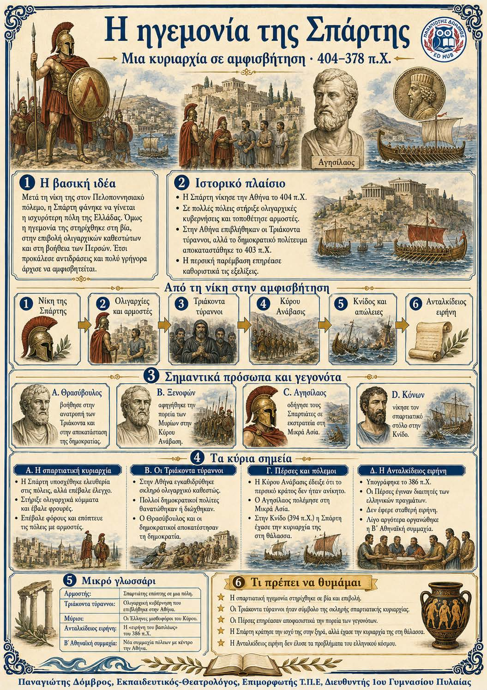

Πληροφοριογράφημα ενότητας
Το πληροφοριογράφημα αυτής της ενότητας δεν έχει ανέβει ακόμη. Οι σημειώσεις παραμένουν πλήρως διαθέσιμες.

Μια κυριαρχία σε αμφισβήτηση · Ελλάδα και Μικρά Ασία, 404–378 π.Χ.
Μετά τη νίκη της στον Πελοποννησιακό πόλεμο, η Σπάρτη προσπάθησε να κυριαρχήσει στον ελληνικό κόσμο. Αντί να ελευθερώσει τις πόλεις, επέβαλε ολιγαρχικές κυβερνήσεις, φρουρές, αρμοστές και φόρους. Οι αντιδράσεις ήταν έντονες και νέοι πόλεμοι ξέσπασαν. Η περσική επέμβαση ενίσχυσε ακόμη περισσότερο την αστάθεια και η Ανταλκίδειος ειρήνη έκανε τους Πέρσες διαιτητές των ελληνικών πραγμάτων.
Νίκη της Σπάρτης το 404 π.Χ. ↓ Ολιγαρχίες, φρουρές, αρμοστές και φόροι ↓ Αντιδράσεις και νέοι πόλεμοι ↓ Περσική παρέμβαση ↓ Ανταλκίδειος ειρήνη ↓ Β΄ Αθηναϊκή συμμαχία
